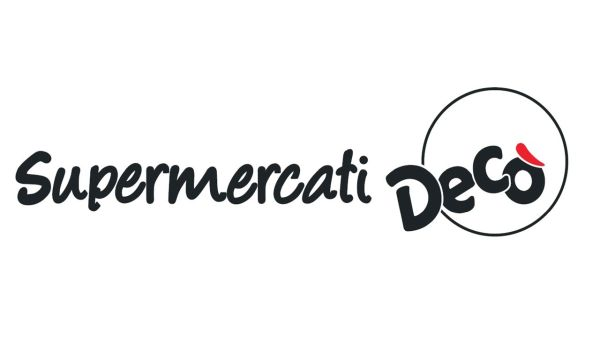
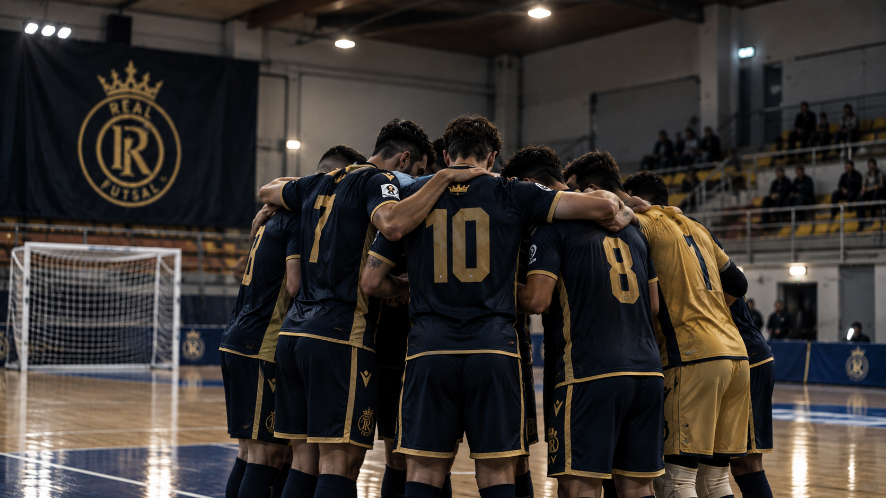
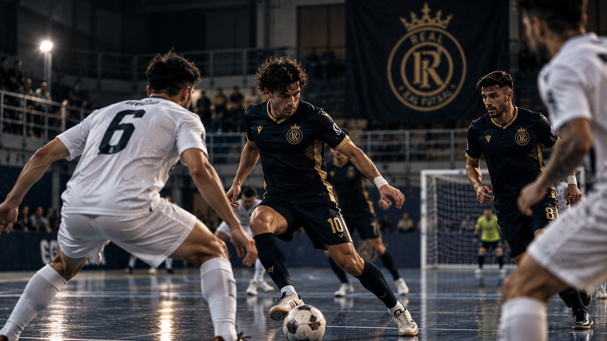
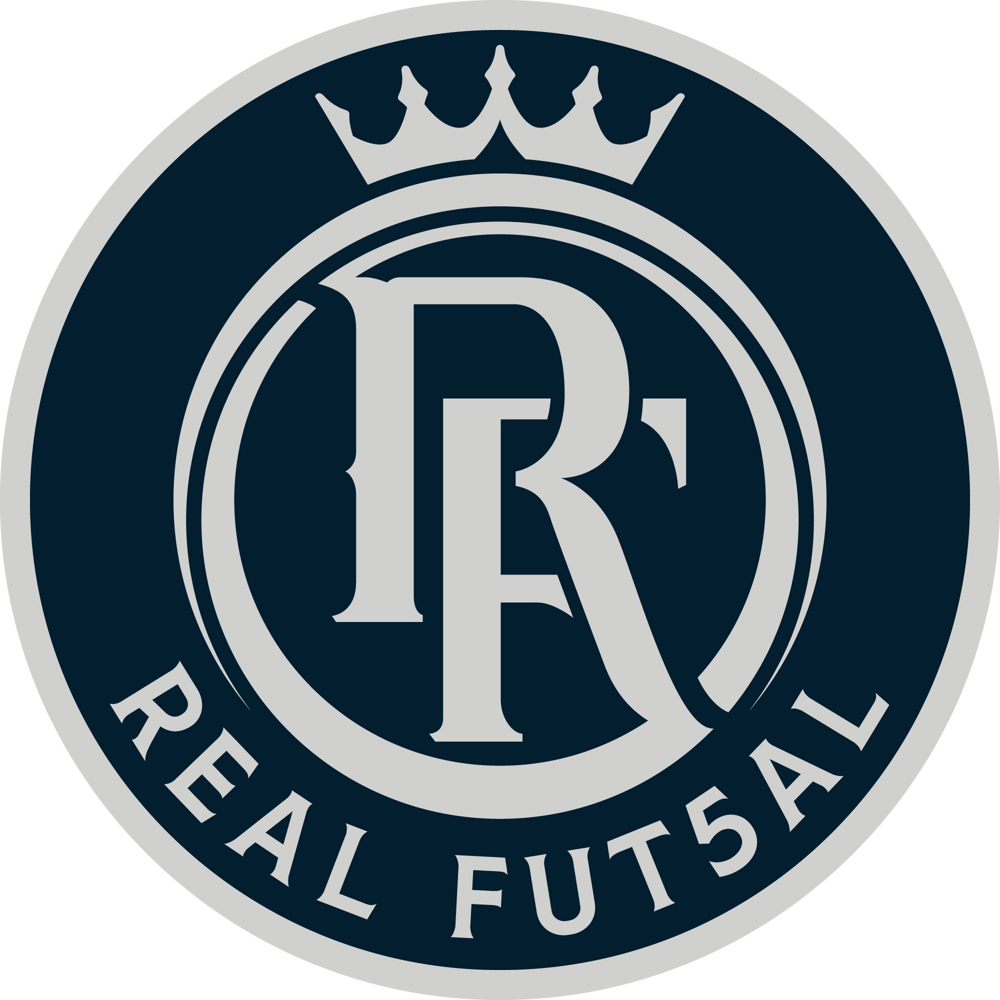

Siamo Tornati: via alla stagione
Torna Paolella per inseguire il primo Scudetto FSSI. «La storia continua».
Leggi → •
•
 •
•

•
Campioni d'Europa del futsal sordi. Da Lido di Noto (Siracusa) al tetto del continente: vincitori della prima Deaf Champions League della storia. E non abbiamo intenzione di fermarci.
Il manifesto
Non siamo una squadra qualsiasi. Siamo i campioni d'Europa del futsal sordi. Da Lido di Noto (Siracusa), per la storia.
17 Gennaio 2026 · Montesilvano
La prima Deaf Champions League della storia. Una finale da dentro o fuori contro gli spagnoli dell'Huelva. Real Fut5al non trema: cuore, tecnica e una Lido di Noto (Siracusa) intera sugli spalti. Alla sirena finale, la coppa è siciliana.
Da quel giorno il mondo lo sa: nel futsal dei sordi comanda Lido di Noto (Siracusa).


★ Campioni d'Europa 2026
Dentro la partita
Ritmo, tecnica, silenzio e fame. Così il quintetto navy e oro domina il parquet, in Italia e in Europa.
Galleria
L'identità
Tre punte sullo stemma, come le tre grandi ambizioni: Europa, Italia, futuro. Navy e argento, eleganza e fame di vittorie. Un club nato per dominare la sua disciplina: la squadra regina del futsal sordi.
Dopo le voci di stop, la scelta: ripartire più forti. Con il ritorno in dirigenza di Emanuele Paolella, la storia continua.
Conosci la squadraPerché Real
Champions ed Coppa Italia in bacheca. Ora il primo Scudetto: la fame non si spegne.
Futsal per atleti sordi ai massimi livelli. Inclusione vera, costruita sul talento.
Dal 15 al 20 marzo 2027 a Guimarães, in Portogallo: difendiamo il titolo continentale.
Obiettivo 2026/2027
Mai conquistato prima. È l'unico trofeo che manca alla leggenda. La caccia è aperta.
Segui la stagioneIl cammino
Prima Deaf Champions League della storia: battuto l'Huelva a Montesilvano.
Ad Aversa il club alza di nuovo la Coppa Italia sordi.
Torna Paolella. «La storia continua»: progetto su basi solide.
Difesa del titolo europeo in Portogallo, dal 15 al 20 marzo.
Sala stampa
Torna Paolella per inseguire il primo Scudetto FSSI. «La storia continua».
Leggi →

Al nostro fianco
Chi crede nel progetto e sostiene i campioni d'Europa del futsal sordi.
La storia continua
Tifosi, atleti, sponsor: il futuro si costruisce insieme.